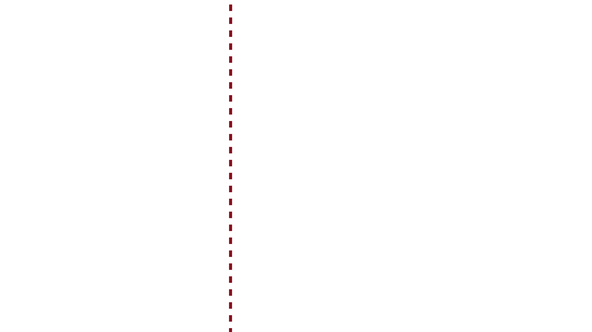
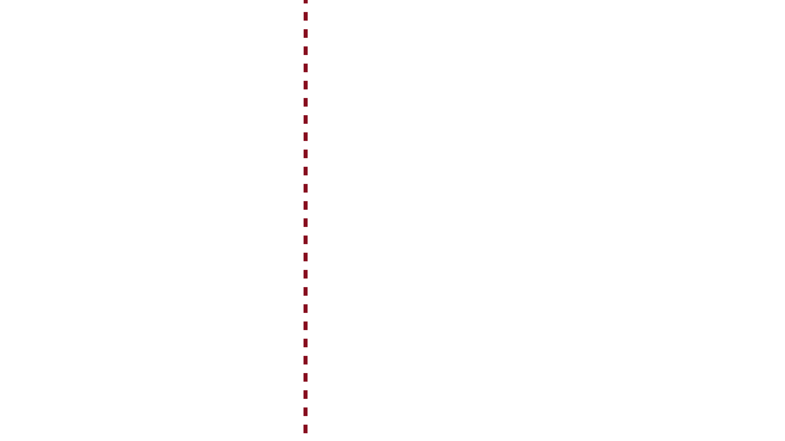
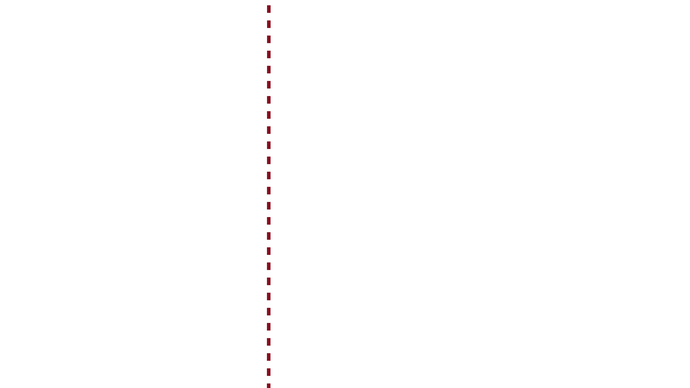
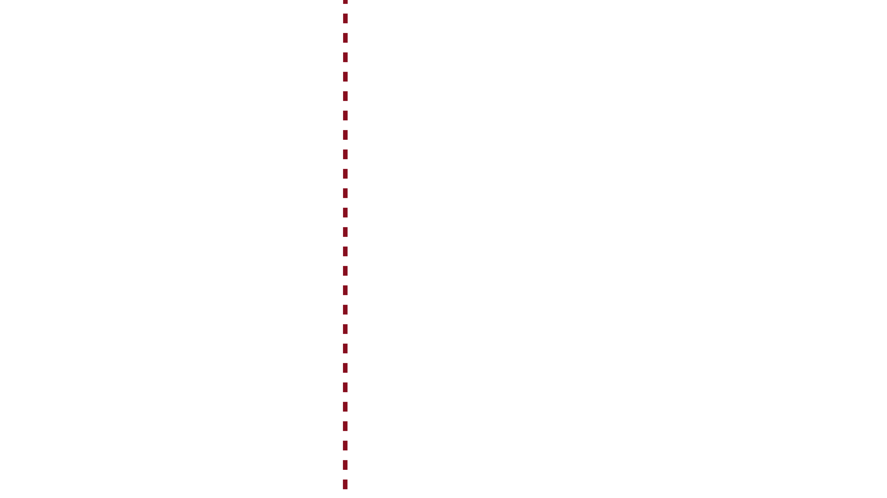
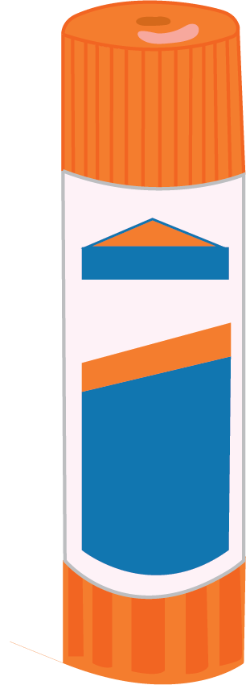
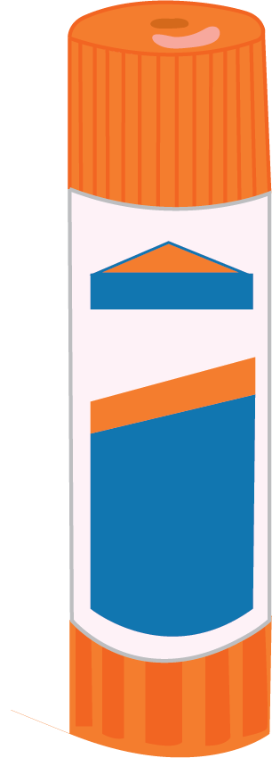
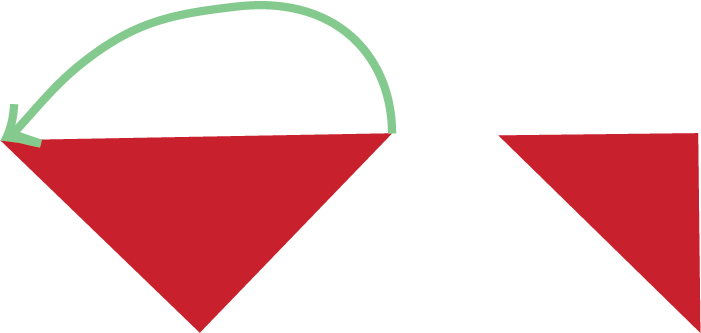
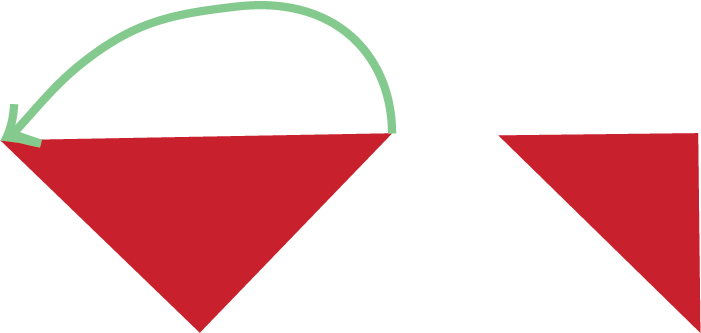

Supplies
Supplies
Supplies
Supplies
Step 1: Cut out 4 identical squares.
Step 2: Fold each square diagonally in
half to form a triangle.
Step 3: Fold the triangle in half again to
form a smaller triangle.
Step 4: Fold the triangle in half AGAIN to
form an even smaller triangle.
Step 5: Hold your triangle up with the
open side pointing to the left.
Draw a rounded edge with your pencil at
the other end of the triangle.
Then use your scissors and cut along the
semi circle.
Checkpoint: Unfold your petal shape
to a flower and repeat
for the other 3 squares.
 





 
1

1
 



crafted with love and care and made by you.